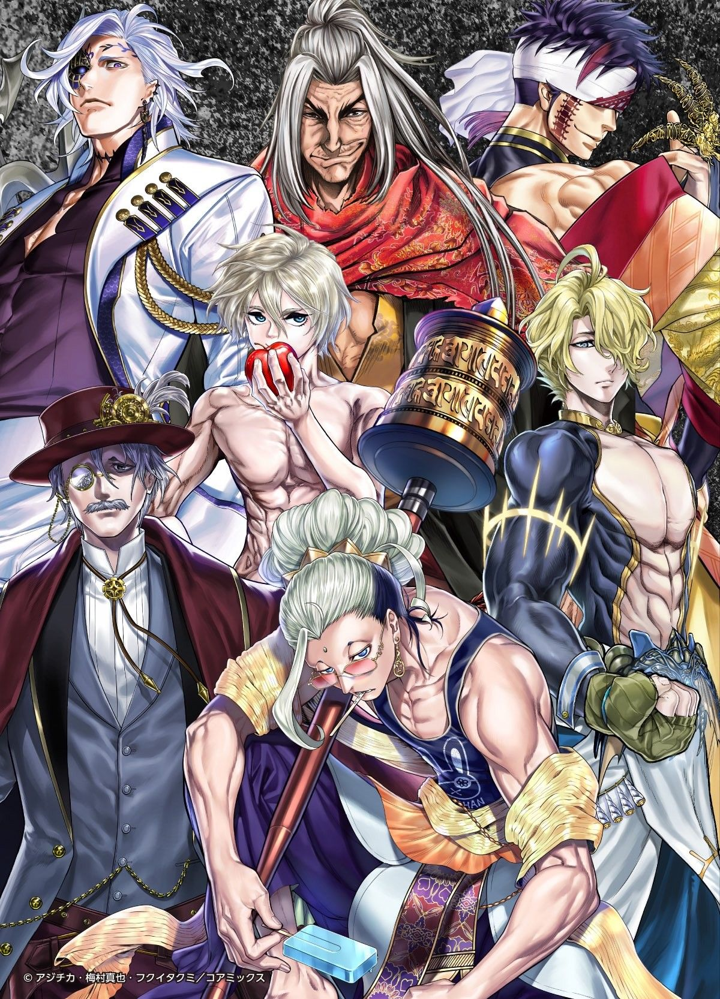
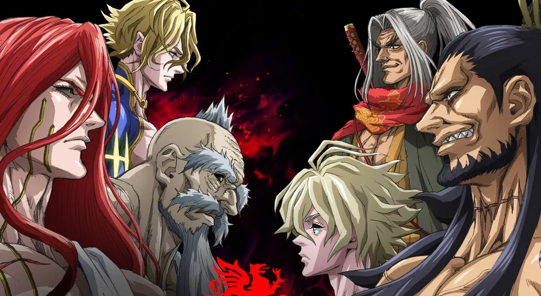
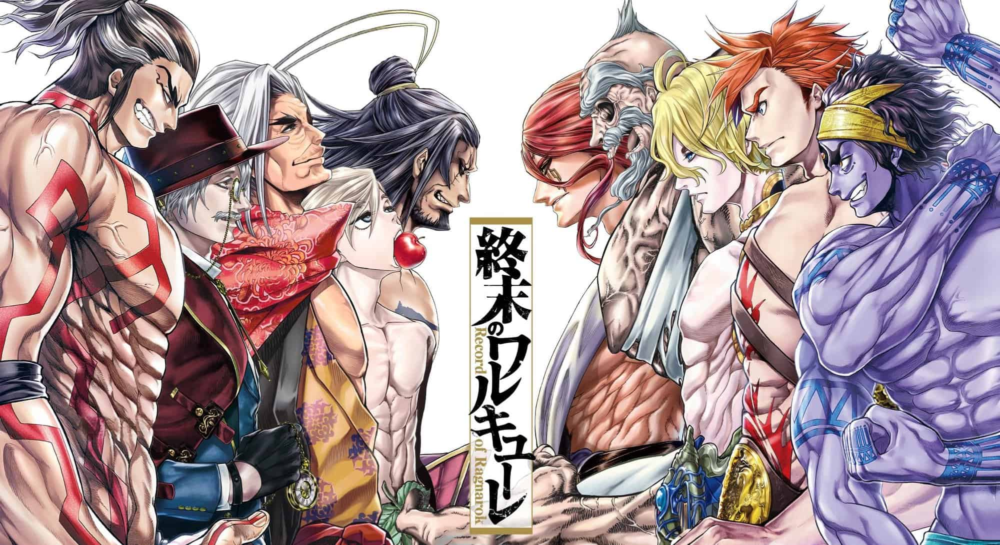

Record of Ragnarok
Record of Ragnarok (終末のワルキューレ, Shūmatsu no Warukyūre; lit. "Fim das Valquírias") é uma série de mangá japonesa escrita por Shinya Umemura e Takumi Fukui e ilustrada por Ajichika. Tudo começou na revista de mangá seinen Monthly Comic Zenon da Coamix (anteriormente também publicada pela Tokuma Shoten) em novembro de 2017. Foi licenciado no Brasil pela NewPOP Editora em setembro de 2021.[3] O mangá foi adaptado como original net animation (ONA) pela Graphinica e estreou na Netflix em junho de 2021.

ENREDO
O Conselho dos Deuses, formado por deuses de diferentes mitologias e liderados por Zeus, o líder do panteão dos deuses gregos, se reúne uma vez a cada milênio para decidir o destino da humanidade, decidindo que os 7 milhões de anos de história irremediável da humanidade justificam sua extinção. Mas a valquíria Brunilda decide defender a humanidade e propõe dar aos humanos uma última chance de provar seu valor. Dessa forma, os deuses concordam em realizar o torneio de Ragnarok, onde a humanidade será poupada se vencer os deuses em sete das treze partidas. Os representantes da humanidade são os Einherjar, humanos notáveis ao longo da história. Cada um recebe a ajuda de uma Valquíria, cujos corpos se transformam em armas poderosas e sob medida para o estilo de combate de seu usuário, chamadas "Völundr". Nesse processo, as Valquírias correm o risco de perder suas vidas se o usuário humano for morto durante o combate.

DEUSES PRINCIPAIS

- POSEIDON
- HADES
- ZEUS
- THOR
- HÉRCULES
- SHIVA
- HERMES